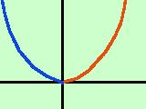
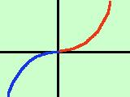
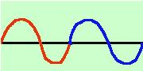

Determinazione di alcuni tipi particolari di funzione
Veramente la determinazione del tipo di funzione (intera, razionale, fratta,..)
deve essere fatta all'inizio prima della determinazione del campo di esistenza.
Qui consideriamo
alcuni tipi di funzione che ci aiutano a costruire il loro grafico e precisamente:
- Per le funzioni pari bastera' costruire solo meta' grafico poi farne il simmetrico
rispetto all'asse delle y (simmetria assiale). In pratica lo ribalto attorno all'asse y. In blu la parte ribaltata
- Per le funzioni dispari bastera' costruire solo meta' grafico poi farne il
simmetrico rispetto all'origine (simmetria centrale) In pratica primo lo ribalto
rispetto all'asse y ed il risultato lo ribalto ancora attorno all'asse x, In blu la parte ribaltata due volte
- Per le funzioni periodiche bastera' costruire un periodo e poi ripeterlo su tutto l'asse reale.
in blu il periodo ripetuto una prima volta
|